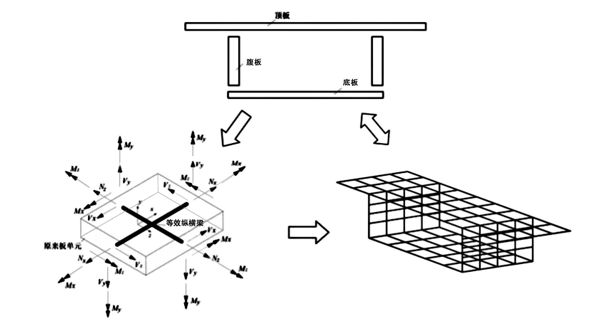
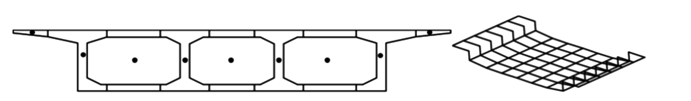
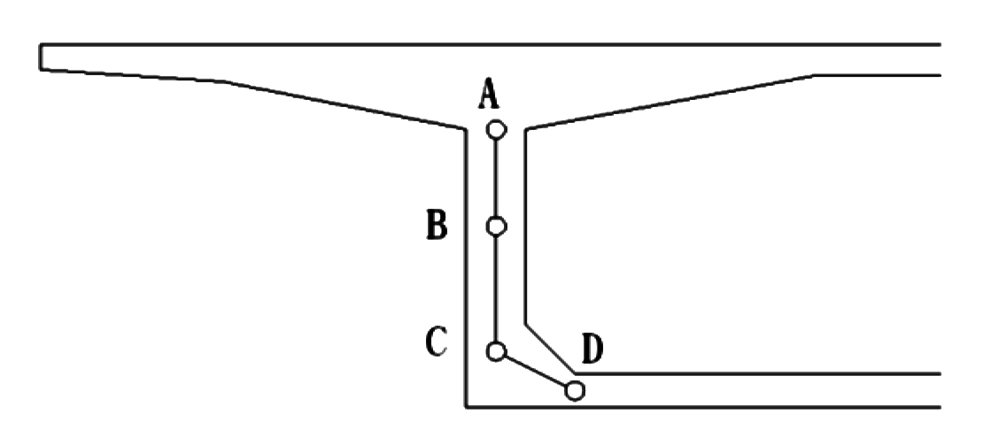

附录A 桥梁结构的实用精细化分析模型 (新增)
附录A 桥梁结构的实用精细化分析模型 (新增)
A.1 一般规定
A.1.1 桥梁结构的实用精细化分析模型主要解决桥梁的空间效应问题，用于弥补单梁模型分析的不足。实用精细化模型针对不同的桥有不同的适用性。
A.2 应用原则
A.2.1 空间网格模型将复杂的桥梁结构离散成多块板，每一个板元离散成十字交叉的正交梁格，以十字交叉的纵横梁的刚度等代成板的刚度，一片正交梁格就像是一张“网”。至此，桥梁结构采用空间网格来表达，如图 A-1。

图 A-1 空间网格模型简化原理示意
A.2.2 折面梁格模型将箱梁截面以垂直于截面主轴方向的切割线切开，保持各纵向梁格的形心位置不变，并采用横向梁格将各纵向梁格联系在一起形成的一个单层的折面格构式模型，如图 A-2所示。

图 A-2 结构离散及折面梁格模型示意
A.2.3 采用3自由度或6自由度梁计算时，扭转效应产生正应力和剪应力放大效应是估算的。目前采用的箱梁宽度比以往要宽，统一采用 1.15 的应力放大系数并不准确。以3座预应力混凝土直线箱梁桥(主跨 100 m,箱宽 11.85 m;主跨 268 m,箱宽 16.5 m;主跨130 m,箱宽16.5 m)为样本桥梁，7自由度单梁模型分析结果显示，在图 A-3中A点(腹板上缘)、B点(截面重心)、C点(腹板下缘)以及 D点(底板边缘),活载剪应力放大系数为1.5~2.0。

图 A-3 箱梁应力计算位置示意
\(\ \)